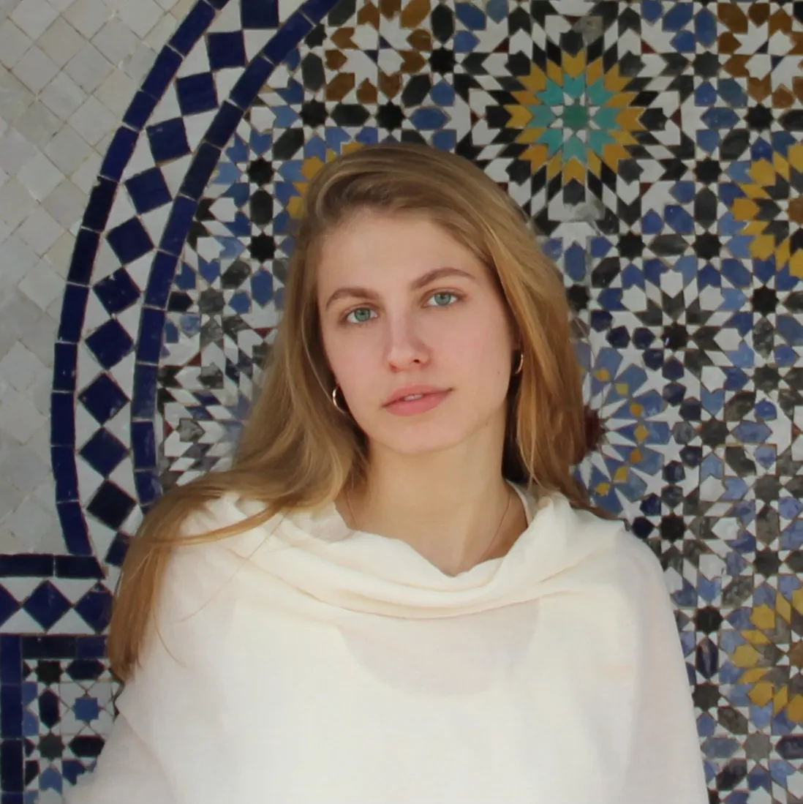

Меня зовут Полина, я 2D-художник и аниматор. Люблю создавать разнообразные миры — от фонов и пропсов до персонажей и раскадровок — и работать в разных стилях, находя для каждого проекта свой визуальный язык.
В 2026 году я завершила работу над анимационным короткометражным фильмом «Ковёр» на Свердловской киностудии, где выступила и в качестве режиссёра, и художника-постановщика. Также работала художником по фонам над другими короткометражными фильмами.
В 2022 году получила среднее специальное образование в колледже ВГИК. Сейчас завершаю обучение в университете ВГИК по специальности «художник анимации и компьютерной графики».
Владею следующим программным обеспечением:
Открыта к интересным проектам.